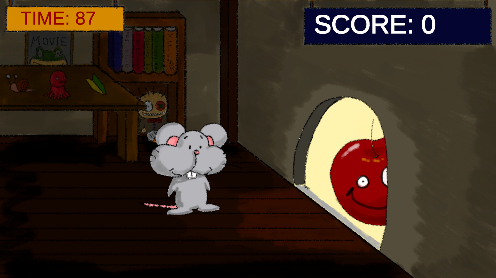
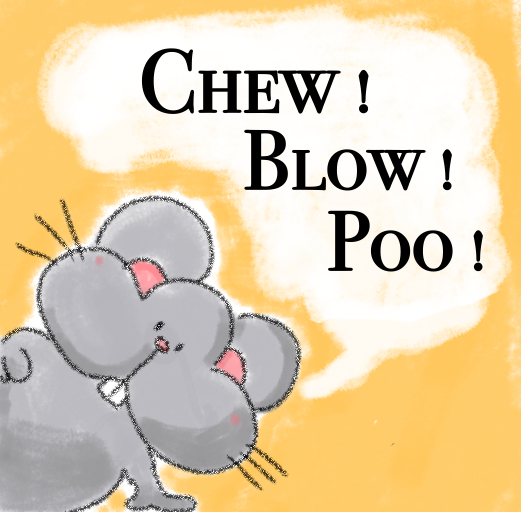

Chew! Blow! Poo!
【食べすぎ注意！「食べる・吹く・出す」で生き残る、ドタバタねずみアクション！】
食いしん坊なねずみを操作してハイスコアを目指す、やみつき2Dアクションゲーム！温かみのある「動く絵本」のような世界観にこだわりました。
●食べてスコアアップ、危険なものは回避！
次々と流れてくるアイテムを瞬時に見極めよう。美味しいものを食べればスコアアップしますが、へんなものや「猫のしっぽ」にはご用心！
●限界前に「出して」生き残れ！
食べ続けるとねずみがどんどん太ってしまい、そのままでは気絶してしまいます！太り具合に気を配り、限界が来る前に「うんち」を出してスッキリしましょう。
「食べる・吹く・出す」の絶妙なタイミングを見極め、ドタバタサバイバルを生き残れ！